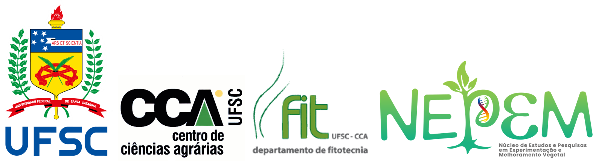

library(tidyverse) # manipulação de dados
library(metan) # estatísticas descritivas/gráficos
library(rio) # importação/exportação de dados
library(emmeans) # comparação de médias
library(AgroR) # casualização e ANOVAMaterial de apoio à disciplinas
Tutoriais com Aplicação em R

Esta página contém os materiais de apoio em linguagem R das disciplinas ministradas pelo Prof. Tiago Olivoto no Departamento de Fitotecnia do Centro de Ciências Agrárias da Universidade Federal de Santa Catarina
Instalação dos softwares
Para reprodução dos exemplos deste material, os softwares R e RStudio são necessários
Professor
Note
Técnico Agrícola pela Escola Estadual de Educação Básica Viadutos (2008), Engenheiro agrônomo pela Universidade do Oeste de Santa Catarina (2014), Mestre em Agronomia: Agricultura e Ambiente pela Universidade Federal de Santa Maria (2017) e Doutor em Agronomia com ênfase em Melhoramento Genético Vegetal e Experimentação Agrícola pela Universidade Federal de Santa Maria (2020). Atualmente é Professor Adjunto A1 do Departamento de Fitotecnia da Universidade Federal de Santa Catarina (UFSC), atuando na área de Melhoramento Genético Vegetal e Experimentação Agrícola. Exerce atividades relacionadas ao planejamento, condução e avaliação de experimentos com culturas anuais, com ênfase no desenvolvimento e aperfeiçoamento de métodos estatístico-experimentais para avaliação de ensaios multi-ambientes em melhoramento genético de plantas. Em seu Currículo, os termos mais frequentes na contextualização da produção científica são: análise de ensaios multi-ambientes, índices multivariados, intervalo de confiança para correlação, planejamento de experimentos, seleção indireta, interação genótipo-vs-ambiente, modelos mistos e parâmetros genéticos. É membro atuante da International Biometric Society (IBS) e integrante da comissão de Jovens Pesquisadores da Região Brasileira da Sociedade Internacional de Biometria, RBras, (JP-RBras) representando os estados do RS, SC e PR. Atua também como revisor ad hoc em revistas científicas nacionais e internacionais. Tem experiência com os softwares Gênes, GEA-R, R, SAS e SPSS. Vem desenvolvendo os pacotes para software R metan, voltado para a checagem, manipulação, análise e apresentação de dados de ensaios multi-ambientes e pliman voltado para a análise de imagens de plantas.
Pacotes úteis
Para reprodução dos exemplos deste repositório é sugerido instalar os seguintes pacotes. Para saber como instalar pacotes no R, visite este vídeo!
Licença

Este conteúdo está licenciado com uma Licença Creative Commons - Atribuição-NãoComercial-CompartilhaIgual 4.0 Internacional. O resumo legível da licença afirma que você tem o direito de:
Compartilhar — copie e redistribua o material em qualquer meio ou formato.
Adaptar — remixar, transformar e construir sobre o material
Atribuir — Você deve dar o crédito apropriado, fornecer um link para a licença e indicar se foram feitas alterações. Você deve fazê-lo sob quaisquer circunstâncias razoáveis, mas de forma alguma sugerindo que o licenciante endossa você ou seu uso.
Esta licença e válida sob os seguintes termos:
- Não comercial (NC) — Você não pode usar o material para fins comerciais.
- Share Alike (SA) — Se você remixar, transformar ou desenvolver o material, deverá distribuir suas contribuições sob a mesma licença do original.
- Sem restrições adicionais — Você não pode aplicar termos legais ou medidas tecnológicas que restrinjam legalmente outras pessoas de fazer qualquer coisa que a licença permita.
Selo DC

O selo selo Democratizando Conhecimento (DC) é uma ideia criada pelo Prof. Ben Dêivid. O selo é compatível com a licença Creative Commons CC BY NC SA 4.0 e é utilizado aqui para garantir que o acesso de todo esse material seja livre, gratuíto e de código aberto. Meu principal objetivo com isso é democratizar o uso e aplicação do R nas Ciências Agrárias.